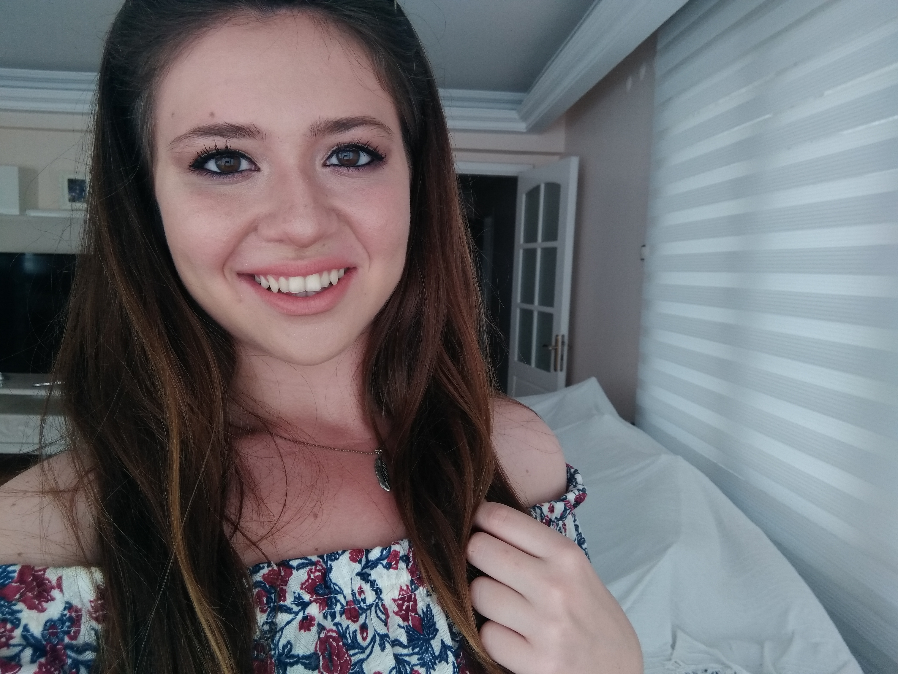

HAKKIMDA
OGRENIM
PROJELER
ILETISIM
CV
HAKKIMDA
Merhaba benim adım Serdem. 30 Haziran 1999'da İzmir Konak'ta doğdum. Doğduğumdan beri ailemle Manisa'da yaşıyorum. Henüz Bilgisayar Mühendisliği bölümüne yeni başladım.
Bu bölüm hakkında şu an pek bir bilgim yok fakat öğrenmek için çok hevesliyim. Bilgi sahibi olmak için okulumuzun topluluklarına katılıyorum.IEEE ve BMT topluluklarının bana bu konuda yardımcı olabileceğini düşünüyorum.
Bu bölüm her geçen gün daha çok ilgimi çekiyor. Kendimi bu konuda geliştirmek istiyorum ama umarım tasarladığım ilk web sitesini beğenirsiniz.
